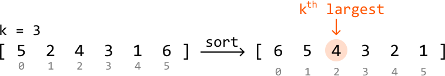
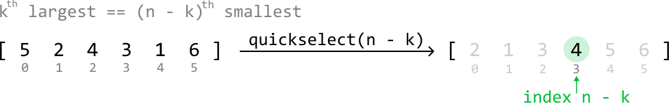
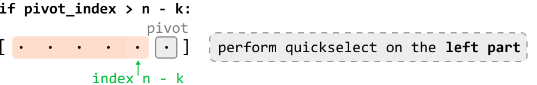

Kth Largest Integer
MediumReturn the kth largest integer in an array.
Example:
Input: nums = [5, 2, 4, 3, 1, 6], k = 3
Output: 4
Constraints:
- The array contains no duplicates.
- The array contains at least one element.
1 ≤ k ≤ n, wherendenotes the length of the array.
Intuition - Min-Heap
A straightforward solution to this problem is to sort the array in reverse order and return the number at the (k - 1)th index:

th largest element in an array. The diagram begins with an unsorted array `[5 2 4 3 1 6]` where `k` is defined as 3. The array's elements are indexed from 0 to 5, shown below each element. A rightward arrow labeled 'sort' indicates a sorting operation transforming the initial array into a sorted array `[6 5 4 3 2 1]`, maintaining the same indexing. Above the sorted array, an orange arrow points down to the element at index 2 (the third largest element), which is 4, highlighting that the 3rd largest element (k=3) is 4. The element '4' is circled in a peach color to emphasize its selection as the kth largest element."/>This solution takes O(nlog(n)) time, but as we only need the kth largest integer, sorting all the elements in the input array might not be necessary. Let’s explore some solutions which take this into account.
An interesting thing to realize is that if we know what the top k largest integers are, we’d know that the smallest of these would be the kth largest integer:
![Image represents a visual depiction of finding the top k largest elements from a list. The input is shown as a list `[5 2 4 3 1 6]` enclosed in square brackets, with each number circled in orange. Arrows in orange indicate the selection of the three largest numbers (5, 4, and 6). These three numbers are then collected into a new list `[5 4 6]`, labeled 'top k largest:', with the number 4 highlighted in a light green circle. A green downward-pointing arrow from the light green circle points to the word 'min', suggesting a subsequent step might involve finding the minimum element within the top k largest elements. The overall diagram illustrates a process of selecting the top k elements and potentially further processing them.](images/17_03_kth-largest-integer-img-ab9911b6.svg)
This leads to the idea that instead of sorting the entire array, we can keep track of the top k largest integers in the array. Is there a way to maintain the top k largest integers, while having access to the smallest of these integers?
A min-heap seems like it should work well for this purpose because it provides efficient access to the smallest element. Let’s explore how to use it to maintain the top k integers in the array.
Consider the below example with k = 3. Let’s begin by pushing the first k integers to the heap:
![Image represents a visual depiction of a min-heap data structure being populated. A downward-pointing arrow originates from a small square containing the letter 'i', suggesting an input source. This arrow points to a bracketed array `[5 2 4 3 1 6]`, where each number represents an element, and the subscripts (0, 1, 2, 3, 4, 5) indicate their indices within the array. To the right, a trapezoidal shape labeled 'min_heap' visually represents the min-heap structure. The number '5' is shown at the top of the min-heap, indicating that it's the root node (the smallest element). The image illustrates the initial step of building a min-heap, where the first element from the input array (5) is placed at the root of the min-heap. The remaining elements (2, 4, 3, 1, 6) are implicitly implied to be added subsequently to maintain the min-heap property (where the value of each node is less than or equal to the values of its children).](images/17_03_kth-largest-integer-img-824e04d2.svg)
![Image represents a visual depiction of a min-heap data structure being built. A downward-pointing arrow labeled 'i' points to an array `[5, 2, 4, 3, 1, 6]`, where each element's index (0-5) is shown below it in gray. This array represents the input data. To the right, a min-heap is shown, visually represented as a trapezoidal structure with a purple border and labeled 'min_heap'. The top node contains the value '2', and the bottom node contains the value '5'. The diagram illustrates an intermediate step in the process of constructing a min-heap from the input array; the '2' at the top of the min-heap suggests that the algorithm has already processed at least the first few elements of the array, placing the smallest element found so far at the root of the heap. The remaining elements in the array are yet to be incorporated into the min-heap structure.](images/17_03_kth-largest-integer-img-7c5f0dac.svg)
![Image represents a visual depiction of a data structure transformation. A small square labeled 'i' points downwards to an array `[5, 2, 4, 3, 1, 6]`, where each element is indexed from 0 to 5 below it. This array is being transformed into a min-heap data structure, shown as a trapezoidal shape with a purple outline labeled 'min_heap'. The min-heap contains the numbers 2, 4, and 5, arranged such that 2 is at the top, 4 is below and to the left, and 5 is below and to the right. The arrangement suggests that the value of each node is less than or equal to the values of its children, a defining characteristic of a min-heap. The arrow from 'i' implies that the array is the input to the process of creating the min-heap.](images/17_03_kth-largest-integer-img-c5263afe.svg)
We shouldn’t immediately push the next element, 3, in the heap because the heap already contains k integers. This gives us a choice:
- Skip 3, or:
- Remove an integer from the heap and push 3 in.
The smallest integer in the heap is 2. Integer 3 is more likely to belong in the top k integers than 2 is, so let’s pop 2 from the heap and push 3 in:
![Image represents a step-by-step illustration of a coding pattern involving a min-heap data structure. The top left shows an array `nums` with elements [5, 2, 4, 3, 1, 6], indexed from 0 to 5, with an arrow pointing to the element at index 3 (value 3). To the right, a min-heap is depicted, initially containing elements 4 and 5, with a 2 (crossed out in red) at the top, indicating it's about to be removed. A dashed box next to the heap describes the algorithm: if `nums[i]` (the current element being processed from the array) is greater than the top element of the min-heap, then the top element is popped (in this case, 2), and `nums[i]` (which is 3) is pushed onto the min-heap. The bottom part shows the min-heap after this operation, now containing 3, 4, and 5. The arrow connecting the top and bottom min-heap diagrams visually represents the transformation resulting from the algorithm described in the dashed box.](images/17_03_kth-largest-integer-img-fd9dc0f6.svg)
The next integer is 1, which is smaller than the smallest integer in the heap. So, we know it’s not among the top k integers:
![Image represents a step in an algorithm, likely involving a min-heap data structure. A numbered array `[5 2 4 3 1 6]` is shown, with an index `i` (represented by a box labeled 'i') pointing to the element '1' at index 4. A min-heap is depicted visually as a tree structure with elements 3 (at the top), 4, and 5. The label 'min_heap' is below the heap. A downward arrow from 'i' points to the array element '1', indicating the current element being processed. A dashed box contains the condition `nums[i] < min_heap.top`, which checks if the current array element (1) is less than the top element of the min-heap (3). A right-pointing arrow from this condition indicates that if the condition is true, the algorithm continues. The overall diagram illustrates a comparison between an element from an input array and the top element of a min-heap, a common operation in heap-based algorithms like heapsort or priority queue management.](images/17_03_kth-largest-integer-img-8ab9a4a8.svg)
The final integer is 6. It’s larger than the smallest integer in the heap. So, let’s pop off the top of the heap and push in 6:
![Image represents a step-by-step illustration of a coding pattern involving a min-heap data structure. The top section shows an array `nums` with elements [5, 2, 4, 3, 1, 6] indexed from 0 to 5, and a min-heap represented as a purple triangle containing the values 4 and 5. A downward arrow points from an index `i` (represented by a small square labeled 'i') to the min-heap, indicating that the element at index `i` (which is 1 in this case) is being processed. A separate box describes the condition `nums[i] > min_heap.top` and the actions taken if the condition is true: popping the top element (3) from the min-heap and pushing `nums[i]` (1) onto the min-heap. The bottom section shows the resulting min-heap after these operations, now containing 4, 5, and 6, illustrating the updated state of the min-heap after processing the element at index `i`. A horizontal arrow connects the before and after states of the min-heap.](images/17_03_kth-largest-integer-img-ed674742.svg)
At this point, the k integers in the heap represent the top k largest integers from the array, with the smallest of these integers located at the top of the heap. This smallest value is the kth largest integer in the entire array, so we can just return this integer from the top of the heap:
![The image represents a data structure visualization illustrating the retrieval of the minimum element from a min-heap. A rectangular box labeled '4' in light purple, representing the top element of the min-heap, is shown with a green arrow pointing right towards the text 'return min_heap.top' written in green. This arrow indicates the action of returning the top element. Below the top element, a trapezoidal shape labeled 'min_heap' in purple contains the numbers '5' and '6', visually representing the remaining elements of the min-heap. The arrangement shows that the min-heap is structured such that the smallest element (4) is at the top, and the subsequent elements (5 and 6) are arranged below, implicitly suggesting a hierarchical structure where the parent node (4) is smaller than its children (5 and 6). The overall diagram demonstrates the process of accessing the minimum value from a min-heap data structure, where `min_heap.top` refers to accessing the top (minimum) element.](images/17_03_kth-largest-integer-img-13068456.svg)
[Interactive code editor — visit bytebytego.com to run]
Implementation - Min-Heap
from typing import List
import heapq
def kth_largest_integer_min_heap(nums: List[int], k: int) -> int:
min_heap = []
heapq.heapify(min_heap)
for num in nums:
# Ensure the heap has at least 'k' integers.
if len(min_heap) < k:
heapq.heappush(min_heap, num)
# If 'num' is greater than the smallest integer in the heap, pop off this
# smallest integer from the heap and push in 'num'.
elif num > min_heap[0]:
heapq.heappop(min_heap)
heapq.heappush(min_heap, num)
return min_heap[0]
import { MinPriorityQueue } from './helpers/heap/MinPriorityQueue.js'
export function kth_largest_integer_min_heap(nums, k) {
// Create a min-heap with a simple comparator
const minHeap = new MinPriorityQueue((n) => n)
for (const num of nums) {
// Ensure the heap has at least 'k' integers.
if (minHeap.size() < k) {
minHeap.enqueue(num)
} else if (num > minHeap.front()) {
// If 'num' is greater than the smallest integer in the heap,
// replace the smallest with 'num'.
minHeap.dequeue()
minHeap.enqueue(num)
}
}
// The kth largest element is the smallest in the heap now.
return minHeap.front()
}
import java.util.ArrayList;
import java.util.PriorityQueue;
public class Main {
public Integer kth_largest_integer_min_heap(ArrayList nums, int k) {
PriorityQueue minHeap = new PriorityQueue<>();
for (int num : nums) {
// Ensure the heap has at least 'k' integers.
if (minHeap.size() < k) {
minHeap.add(num);
}
// If 'num' is greater than the smallest integer in the heap, pop off this
// smallest integer from the heap and push in 'num'.
else if (num > minHeap.peek()) {
minHeap.poll();
minHeap.add(num);
}
}
return minHeap.peek();
}
}
Complexity Analysis
Time complexity: The time complexity of kth_largest_integer_min_heap is O(nlog(k)) because for each integer, we perform at most one push and pop operation on the min-heap, which has a size no larger than k. Each heap operation takes O(log(k)) time.
Space complexity: The space complexity is O(k) because the heap can grow to a size of k.
Intuition - Quickselect
The previous approach involved keeping track of the k largest integers to identify the kth largest integer. This effectively required us to keep these k values partially sorted through the use of a heap. But what if there’s a way to position only the kth largest value in its expected sorted position, without sorting the other numbers?
![Image represents a comparison of three different approaches to sorting an array. The input array `[5 2 4 3 1 6]` is shown at the left. Three arrows emanate from this array, each representing a different sorting method. The top arrow leads to a fully sorted array `[1 2 3 4 5 6]`, labeled 'sort the whole array:', with a time complexity of O(nlog(n)). The middle arrow points to a partially sorted array `[... 4 5 6]`, labeled 'sort the k largest integers:', showing only the k largest integers sorted, with a time complexity of O(nlog(k)). The bottom arrow shows a final array `[... 4 ...]`, labeled 'only position the k<sup>th</sup> largest integer in its sorted index:', where only the k<sup>th</sup> largest integer (in this case, 4) is placed in its correct sorted position. This last method is marked with '(faster?)', suggesting it's potentially more efficient than the previous two. Each array displays indices below its elements for clarity. The highlighted '4' in each output array emphasizes the focus on the k<sup>th</sup> largest element.](images/17_03_kth-largest-integer-img-295b2659.svg)
Quickselect can be used to achieve this.
Quickselect is an algorithm that leverages the partition step of quicksort, which positions a value in its sorted position. Quickselect is generally used to find the kth smallest element, whereas, in this problem, we're asked to find the kth largest element. To utilize quickselect for this purpose, we can instead find the (n - k)th smallest integer, which is equivalent to finding the kth largest element:

th largest == (n - k)th smallest' highlights the relationship between the kth largest and (n-k)th smallest elements, where 'n' is the array's size. A horizontal arrow connects the initial array to a partially sorted array `[2 1 3 4 5 6]`. This arrow is labeled `quickselect(n - k)`, indicating that the `quickselect` function is applied to find the (n-k)th smallest element. The (n-k)th smallest element (which is also the kth largest) is highlighted in light green within the resulting array, specifically at index `n - k`, which is explicitly labeled with a green upward-pointing arrow. The diagram visually demonstrates how finding the (n-k)th smallest element using `quickselect` effectively identifies the kth largest element."/>Now, let’s dive into how quickselect works. To understand quickselect, we recommend you study the quicksort solution provided in the Sort Array problem.
Quickselect works identically to quicksort in that we:
1. Choose a pivot.
2. Partition the array into two parts by moving elements around the pivot so that:
- Numbers less than the pivot are moved to its left.
- Numbers greater than the pivot are moved to its right.
The primary difference between these two algorithms lies in the recursion step:
- In quicksort, we recursively process both the left and right parts.
- In quickselect, we only need to recursively process one of these parts.
Let’s explore why only one part is chosen.
Deciding which part of a partition to process
Suppose we pick a random number as a pivot. After performing a partition, this pivot will be positioned correctly. From here, there are three possibilities for the position of the (n - k)th smallest integer:
-
If the pivot is positioned before index
n - k, it means the (n - k)th smallest integer must be somewhere to the right of the pivot. So, perform quickselect on the right part:![Image represents a segment of a Quickselect algorithm visualization. At the top, a conditional statement 'if pivot_index < n - k:' is shown, indicating a decision point in the algorithm. Below this, a visual representation of an array is presented. The array is shown as `[ . . pivot . . . . ]`, where `pivot` is a gray square representing the pivot element, and the dots represent other elements. A peach-colored rectangle highlights a portion of the array to the right of the pivot. A green upward-pointing arrow labeled 'index n - k' connects to the right side of this peach rectangle, indicating that this section of the array contains `n - k` elements, where `n` is the array's size and `k` is a target rank. Finally, a light gray, dashed-bordered box to the right states 'perform quickselect on the right part,' indicating that if the condition `pivot_index < n - k` is true, the Quickselect algorithm recursively operates on the right sub-array (the peach-colored section) to find the k-th smallest element.](images/17_03_kth-largest-integer-img-bb601ecc.svg)
-
If the pivot is positioned after index
n - k, perform quickselect on the left part:
n - k:`. Below this, a peach-colored rectangle represents an array, depicted with ellipses (...) indicating multiple elements, enclosed in square brackets `[ ... ]`. A single element within the array is highlighted as `pivot` within a grey square. A green upward-pointing arrow labeled `index n - k` connects the array to the `pivot` element, indicating its position within the array. To the right, a dashed-line rectangle contains the text 'perform quickselect on the left part', describing the action taken if the conditional statement is true. The overall structure illustrates a decision point in the algorithm: if the pivot's index is greater than `n - k`, then the Quickselect algorithm is recursively applied to the left portion of the array."/> -
If the pivot is positioned exactly at index
n - k, the pivot itself is the (n - k)th smallest integer. So, we just return the pivot:![Image represents a code snippet illustrating a conditional return statement within a function. The top line shows a conditional statement: `if pivot_index == n - k:`. This checks if the variable `pivot_index` is equal to the result of `n - k`, where 'n' and 'k' are presumably pre-defined variables. Below this, a visual representation of an array `[...]` is shown, with ellipses (...) indicating unspecified elements. A light-green square labeled 'pivot' highlights a specific element within the array. An upward arrow points from the text 'index n - k' to the 'pivot' square, indicating that `pivot_index` represents the index `n - k` within the array `nums`. To the right, a dashed-line box contains the code `return nums[pivot_index]`, signifying that if the condition in the first line is true, the function returns the element at the `pivot_index` within the `nums` array. The overall diagram visually explains how a pivot element's index is calculated and used to return a value from an array based on a specific condition.](images/17_03_kth-largest-integer-img-f34c6452.svg)
[Interactive code editor — visit bytebytego.com to run]
Implementation - Quickselect
Note that the partition function in this implementation is identical to the partition function in Sort Array. Also, this implementation selects a random pivot, as per the optimization discussed in Sort Array.
import random
from typing import List
def kth_largest_integer_quickselect(nums: List[int], k: int) -> int:
return quickselect(nums, 0, len(nums) - 1, k)
def quickselect(nums: List[int], left: int, right: int, k: int) -> None:
n = len(nums)
if left >= right:
return nums[left]
random_index = random.randint(left, right)
nums[random_index], nums[right] = nums[right], nums[random_index]
pivot_index = partition(nums, left, right)
# If the pivot comes before 'n - k', the ('n - k')th smallest integer is somewhere
# to its right. Perform quickselect on the right part.
if pivot_index < n - k:
return quickselect(nums, pivot_index + 1, right, k)
# If the pivot comes after 'n - k', the ('n - k')th smallest integer is somewhere
# to its left. Perform quickselect on the left part.
elif pivot_index > n - k:
return quickselect(nums, left, pivot_index - 1, k)
# If the pivot is at index 'n - k', it's the ('n - k')th smallest integer.
else:
return nums[pivot_index]
def partition(nums: List[int], left: int, right: int) -> int:
pivot = nums[right]
lo = left
for i in range(left, right):
if nums[i] < pivot:
nums[lo], nums[i] = nums[i], nums[lo]
lo += 1
nums[lo], nums[right] = nums[right], nums[lo]
return lo
/**
* @param {number[]} nums - Array of integers
* @param {number} k - The kth largest integer to find
* @returns {number}
*/
export function kth_largest_integer(nums, k) {
return quickselect(nums, 0, nums.length - 1, k)
}
function quickselect(nums, left, right, k) {
const n = nums.length
if (left >= right) {
return nums[left]
}
const randomIndex = Math.floor(Math.random() * (right - left + 1)) + left
;[nums[randomIndex], nums[right]] = [nums[right], nums[randomIndex]]
const pivotIndex = partition(nums, left, right)
// If the pivot comes before 'n - k', the ('n - k')th smallest is to the right.
if (pivotIndex < n - k) {
return quickselect(nums, pivotIndex + 1, right, k)
}
// If the pivot comes after 'n - k', it's to the left.
else if (pivotIndex > n - k) {
return quickselect(nums, left, pivotIndex - 1, k)
}
// If the pivot is at 'n - k', it's the answer.
else {
return nums[pivotIndex]
}
}
function partition(nums, left, right) {
const pivot = nums[right]
let lo = left
for (let i = left; i < right; i++) {
if (nums[i] < pivot) {
;[nums[i], nums[lo]] = [nums[lo], nums[i]]
lo++
}
}
;[nums[lo], nums[right]] = [nums[right], nums[lo]]
return lo
}
import java.util.ArrayList;
import java.util.Random;
public class Main {
public int kth_largest_integer_quickselect(ArrayList nums, int k) {
return quickselect(nums, 0, nums.size() - 1, k);
}
public int quickselect(ArrayList nums, int left, int right, int k) {
int n = nums.size();
if (left >= right) {
return nums.get(left);
}
Random rand = new Random();
int randomIndex = rand.nextInt(right - left + 1) + left;
int temp = nums.get(randomIndex);
nums.set(randomIndex, nums.get(right));
nums.set(right, temp);
int pivotIndex = partition(nums, left, right);
// If the pivot comes before 'n - k', the ('n - k')th smallest integer is somewhere
// to its right. Perform quickselect on the right part.
if (pivotIndex < n - k) {
return quickselect(nums, pivotIndex + 1, right, k);
}
// If the pivot comes after 'n - k', the ('n - k')th smallest integer is somewhere
// to its left. Perform quickselect on the left part.
else if (pivotIndex > n - k) {
return quickselect(nums, left, pivotIndex - 1, k);
}
// If the pivot is at index 'n - k', it's the ('n - k')th smallest integer.
else {
return nums.get(pivotIndex);
}
}
public int partition(ArrayList nums, int left, int right) {
int pivot = nums.get(right);
int lo = left;
for (int i = left; i < right; i++) {
if (nums.get(i) < pivot) {
int temp = nums.get(lo);
nums.set(lo, nums.get(i));
nums.set(i, temp);
lo++;
}
}
int temp = nums.get(lo);
nums.set(lo, nums.get(right));
nums.set(right, temp);
return lo;
}
}
Complexity Analysis
Time complexity: The time complexity of kth_largest_integer_quickselect can be analyzed in terms of the average and worst cases:
-
Average case: O(n). In the average case, quickselect partitions the array and reduces the problem size by approximately half each time by performing a recursive call on only one part of each partition. A linear partition is performed during each of these recursive calls. This results in a total time complexity of O(n)+O(n/2)+O(n/4)+O(n/8)+…, which is a geometric series that sums to O(n).
-
Worst case: O(n2). The worst-case scenario occurs when the pivot selection consistently results in extremely unbalanced partitions. This can result in the problem size only being reduced by one element after each partition, leading to a total time complexity of O(n)+O(n−1)+O(n−2)+…, which can be simplified to an O(n2) time complexity.
Space complexity: The space complexity can also be analyzed in terms of the average and worst cases:
-
Average Case: O(log(n)). In the average case, the depth of the recursive call stack is approximately log2(n).
-
Worst Case: O(n). In the worst case, the depth of the recursive call stack can be as deep as n.